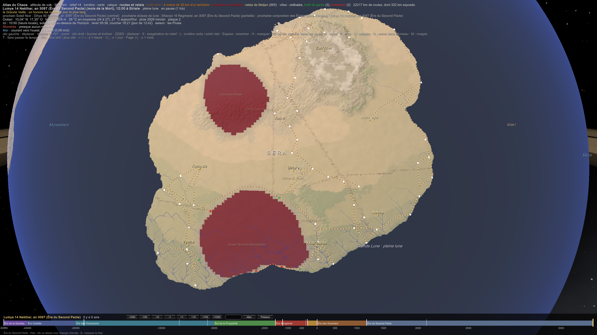
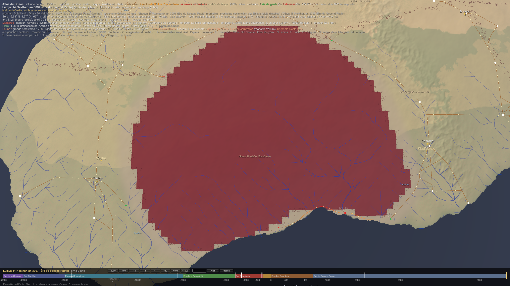
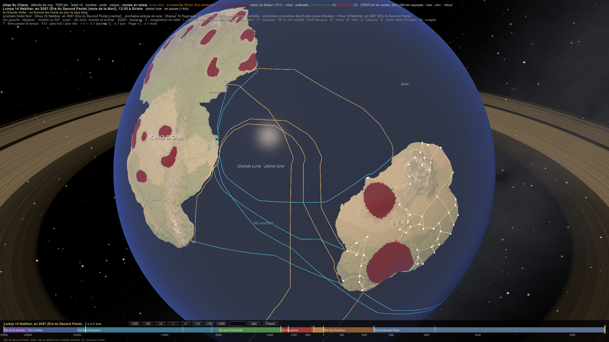
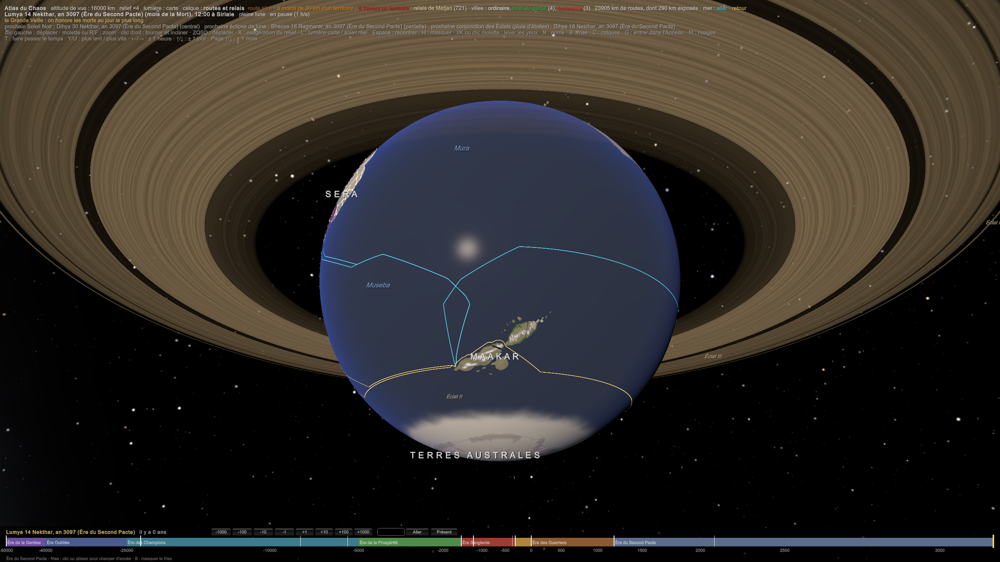

CIV-019 — Les voyages et les transports
Validé par l'auteur (2026-11-09, C-190).
Ce qui est posé :
- la bête en sursis : les bêtes ne vivent naturellement que sur Khodom ; ailleurs, une bête domestique se garde dans des étables cerclées de fer, sinon sa lignée tourne au monstre (C-36, BIO-001 Bêtes, monstres et Lumas) ;
- les dompteurs domestiquent les monstres de lignée (MAG-004) ;
- les territoires couvrent ≈ 20 % de Sera (SIM-05 Transport du Chaos), et un monstre menace à ≈ 30 km du sien (CIV-017 Les villes et la vie quotidienne) ;
- le transport coûte : 1 par mer, 5 par fleuve, 28 par route ; le grain voyage par l'eau ; Metjen est le dieu des routes, et ses temples sont les relais (CIV-011 L'économie) ;
- la mer : la guilde des pilotes, les convois, la pluie d'anneau entre 35° et 45° tous les 12,2 jours, les coques cerclées de fer, les leurres (PLA-012 Les océans) ;
- tes sources : l'élevage de montures d'Ankoro (Kemazo), les éléphants, les buffles et les chevaux de Naora, les chameaux et les caravanes royales de Zun'khel, les pigeons voyageurs, les trams et le rail électrique de Vesha, la vapeur de Khal'daras ;
- Maakar flotte : « on n'y entre que si l'on vous y fait voler » ; un Nyamakala ne pèse que ≈ 15 kg en vol (PLA-009 Maakar, l'archipel et ses îles flottantes, BIO-007 Les Nyamakalas) ;
- le DarkDen permet de trouver et de contacter quelqu'un (CIV-003 Le DarkDen).
1. Les vitesses (proposition, chiffrée sur le réel)
| Moyen | Par jour | Ce qu'il porte | Modèle réel |
|---|---|---|---|
| à pied | 25 à 30 km | ce qu'on porte | une journée de marche, la distance entre deux relais |
| le char à bœufs | 15 à 20 km | ≈ 1 tonne | le chariot de l'Antiquité |
| la caravane (chameaux de Bactriane, à Zun'khel) | 30 à 40 km | ≈ 200 kg par bête | les caravanes de la route de la soie |
| le courrier à relais | 150 à 250 km | une lettre | le yam mongol, l'angareion perse |
| le fleuve, en descendant | 50 à 100 km | des dizaines de tonnes | le Nil, le Niger |
| le navire à voile | 100 à 200 km | des centaines de tonnes | ≈ 4 à 5 nœuds |
| le tram de Vesha | ≈ 15 km/h, en ville | des voyageurs | les premiers trams électriques |
| un Nyamakala qui vole | ≈ 400 km | une lettre, un petit paquet | les grands oiseaux migrateurs |
Traverser Sera (≈ 2 700 km d'un bout à l'autre) : trois mois en caravane, une quinzaine de jours par courrier, trois semaines par mer en longeant les côtes.
2. Les montures : des bêtes en sursis et des monstres domptés (proposition)
- Les chevaux, les bœufs et les chameaux viennent de Khodom, ou de lignées qui en viennent. Hors de Khodom, une bête de voyage ne craint pas grand-chose pour elle-même ; c'est sa descendance qui risque de tourner. On garde donc les reproducteurs dans des haras cerclés de fer, comme ceux d'Ankoro, à Kemazo, et l'on ne fait jamais saillir une bête qui a traversé un territoire.
- Un haras est un trésor d'État : sans lui, plus de chevaux en une génération. Les haras de Kemazo sont aussi bien gardés que ses arsenaux.
- Les monstres de lignée domptés : des bêtes marronnes devenues monstres, reprises par les dompteurs. Elles sont plus fortes, plus endurantes, et mangent moins près des territoires, puisqu'elles y boivent le Chaos (SIM-08 Le corps et le Chaos). Mais elles sont dangereuses, rares et chères : la monture des héros et des héritiers, signe de rang.
- Les éléphants de Naora portent les charges lourdes du delta, là où les roues s'enlisent.
3. Les routes : passer entre les territoires (proposition)
- Une route sûre passe à plus de 30 km de tout territoire. Sur un continent couvert à 20 % de territoires, ça ne laisse que des couloirs. La carte des couloirs est le bien le plus précieux d'un marchand. Les prêtres de Metjen la tiennent à jour, comme les pilotes tiennent celle des mers.
- Les relais de Metjen, à une journée de marche (25 à 30 km) les uns des autres : un puits, une étable de fer, une porte de fer pour la nuit. On y paie le passage, on y prie, on y apprend où les territoires ont bougé : les territoires errants migrent (SIM-05).
- Les convois : on ne voyage pas seul. Un convoi loue une escorte (un héros, quelques soldats, un mage pour la nuit), et partage le prix.
- Ce qui arrête les voyageurs :
- les Jours Sans Pacte : sans dieu, pas de protection. Les relais ferment, les routes se vident ;
- la pluie d'anneau, dans la bande de 35° à 45° : tous les 12,2 jours, on s'abrite. Les caravanes de cette bande règlent leurs étapes sur les conjonctions des Éclats ;
- la saison des pluies de Sera : les routes de terre deviennent des fleuves de boue.
4. L'eau d'abord (proposition)
- Tout ce qui est lourd voyage par l'eau (CIV-011) : le grain, le fer, le bois, la pierre.
- Les fleuves sont les grandes routes de Sera : le Naora, le Nerhal, le Kaor, le Kalrha, le Lashar. Les villes-ports fluviales sont les carrefours du monde (Kor'van, à Naora, en vit).
- La mer a ses pilotes et ses convois (PLA-012). Un navire de haute mer emporte un mage de navire, qui dessale l'eau (MAG-006) : un mage à bord double l'autonomie d'un navire, qui n'a plus à porter son eau.
5. Monter à Maakar : les nacelles de pierre (proposition)
Un Nyamakala ne peut pas porter un voyageur : il ne pèse que ≈ 15 kg en vol, et un Muntu en pèse 65. Comment Maakar fait-il entrer ses visiteurs ?
- La roche de Maakar flotte : chargée de Chaos orienté, elle porte presque tout son poids (SIM-16). Une nacelle taillée dans cette roche monte d'elle-même jusqu'à son altitude d'équilibre, celle des îles.
- On la retient par du lest. Pour monter, on lâche le lest ; pour descendre, on en reprend. Seul le lest fait descendre : le fer ne boit que le Chaos libre (C-27), pas le Chaos lié de la roche (C-190). Des équipes de Nyamakalas guident la nacelle et l'arriment.
- C'est Maakar qui décide qui monte : les nacelles sont à lui, et les quais d'embarquement sont gardés. « On n'y entre que si l'on vous y fait voler » : on y entre si Maakar vous envoie une nacelle.
6. Les nouvelles vont plus vite que les marchandises (proposition)
| Moyen | Vitesse | Qui |
|---|---|---|
| le DarkDen | instantané : on y trouve et on y contacte quelqu'un, où qu'il soit | les initiés ; le reste du monde l'ignore ou s'en méfie |
| le Fa | instantané, mais ce sont les messages des dieux, pas ceux des hommes (C-185) | les prêtres |
| les tambours parlants | des centaines de km à l'heure, de fortin en fortin | Kemazo (C-187) |
| les Nyamakalas messagers | ≈ 400 km par jour, par-dessus les territoires | Maakar, et ceux qui les paient |
| les pigeons voyageurs | ≈ 600 km par jour | Zun'khel, les marchands |
| le courrier à relais | 150 à 250 km par jour | les royaumes, les temples de Metjen |
Le DarkDen change tout pour ceux qui le connaissent. Un marchand initié sait le prix du grain à Khal'daras le jour même ; un concurrent qui ne l'est pas l'apprend dans trois semaines. Le secret du DarkDen est aussi un secret commercial.
L'empire perse avait des relais de chevaux à une journée l'un de l'autre sur la Voie royale : un message parcourait les 2 700 km de Suse à Sardes en environ sept jours. Le yam de l'Empire mongol comptait plusieurs milliers de relais. Hérodote en a tiré une phrase que la poste américaine a gravée sur son bâtiment de New York : « Ni la neige, ni la pluie, ni la chaleur, ni l'obscurité de la nuit n'empêchent ces courriers d'accomplir leur course. »
7. Dans l'Atlas : le calque « routes et relais » (C-196)
Le calque relie chaque ville de Sera à ses trois voisines par le chemin le moins coûteux : le relief, la bande des 30 km autour des territoires (huit fois plus chère), les territoires eux-mêmes (cinquante fois). Les routes déjà tracées attirent les suivantes.
| Ce qu'il trouve | |
|---|---|
| routes | ≈ 22 000 km |
| relais de Metjen | ≈ 665, un tous les 30 km |
| routes exposées (à moins de 30 km d'un territoire) | ≈ 320 km |
| routes qui traversent un territoire | ≈ 150 km |
- Presque tout Sera se traverse sans danger. Les couloirs existent : les territoires sont de grandes taches, pas un réseau.
- Le seul passage obligé est la côte sud du Grand Territoire Monstrueux, entre Vesha et Khal'daras : une étroite bande de terre entre le territoire et la mer, gardée par les forteresses de Marévia et de Khal'din. C'est la route la plus dangereuse de Sera, et celle du marché noir.
 
8. Les routes de mer, à l'échelle du monde (calculées sur l'Atlas ; validé, C-224)
 
Le modèle. L'Atlas fait naviguer un voilier sur les mers, sur une grille de 0,5°. Il cherche le chemin le plus rapide, sans aucun tracé imposé, dans chaque sens séparément :
- la vitesse est de 9 km/h vent arrière par bon vent, soit environ 200 km par jour (§ 1). Elle tombe à 75 % vent de travers et presque à rien face au vent, où il faut louvoyer ;
- le vent est le vent moyen de l'année : les alizés soufflent vers l'ouest, les vents d'ouest vers l'est. Le vent faiblit dans les calmes de l'équateur (le pot-au-noir) et vers 30° (les latitudes des chevaux) ;
- le courant de surface de l'Atlas s'ajoute à la vitesse ;
- la mer sous Maakar est exclue : c'est une mer d'ombre où tombent les pierres (PLA-009). Narak descend ses navires au bord de l'archipel.
| Liaison | Aller | Retour |
|---|---|---|
| Kemazo (Tazrim) → ses comptoirs de fer | 3 400 km, 19 jours | 5 400 km, 45 jours |
| Arhamya (son port de guerre du nord-ouest, C-224) → son comptoir | 6 700 km, 42 jours | 3 800 km, 28 jours |
| Vesha (la Baie du Vice) → le marché aux captifs | 3 600 km, 18 jours | 8 000 km, 71 jours |
| Narak → Sera (Perewaji, Vesha) | 9 500 km, 58 jours | 10 200 km, 63 jours |
| Narak → Khodom (!hoa‡hene, le port des Poissons) | 15 800 km, 93 jours | 17 000 km, 111 jours |
| Thryz (Tawurt) → Narak : le sel | 16 000 km, 81 jours | 14 200 km, 72 jours |
Ce que ça montre.
- La volta do mar apparaît toute seule (CIV-036 § 1). À l'aller, Kemazo descend avec les alizés et touche Khodom en 19 jours. Au retour, il faut monter chercher les vents d'ouest vers 37°N, puis redescendre le long de Sera : 45 jours.
- Pour Arhamya, c'est l'inverse. Sa côte est au nord, dans les vents d'ouest. Il lui faut 42 jours pour descendre chercher les alizés, mais seulement 28 pour revenir.
- Le retour de Vesha est le pire : 71 jours, contre les alizés, en remontant presque jusqu'à 36°N. Il passe devant toute la côte de Kemazo.
- Tawurt et Maakar : on va vers l'ouest avec les alizés du sud, et on revient par les vents d'ouest des quarantièmes, jusqu'à 57°S. C'est pourquoi seuls les Navigateurs font ce voyage : près de trois mois de mer, loin de la Porte.
- Maakar et Khodom, ses seuls vrais partenaires, sont à plus de trois mois de mer l'un de l'autre. Leur commerce ne peut porter que sur des choses rares et légères, ou passer par les airs.
Les vents de l'Atlantique tournent comme un manège : les alizés vers l'ouest entre 10 et 25°, les vents d'ouest vers l'est entre 35 et 55°, et des calmes entre les deux. Les marins portugais ont appris à suivre ce cercle : on part avec les alizés, et on revient par le large (Russell-Wood, The Portuguese Empire, 1415–1808, 1998). Les routes de la marine à voile de l'Atlantique en ont gardé la forme jusqu'au XIXe siècle (Maury, The Physical Geography of the Sea, 1855).
9. Les saisons de navigation (proposition, calculée sur l'Atlas)
Le modèle. Ce sont les mêmes routes qu'au § 8, mais le vent change maintenant pendant le voyage, mois par mois. La zone des calmes de l'équateur (la ZCIT) suit le soleil avec un mois de retard, et les alizés et les vents d'ouest se déplacent avec elle.
- Les cyclones (PLA-007) naissent sur la mer chaude, entre 8 et 30° de latitude, à la fin de l'été local, quand la mer est la plus chaude.
- Au nord, l'été culmine en Eryndar, et les cyclones frappent d'Eryndar à Ylionar, au plus fort en Vulkarar. Au sud, c'est l'inverse : de Ragmarar à Sylvarar.
- Le calcul ne contourne pas les tempêtes : il donne la durée la plus courte, et le nombre de jours passés dans la saison des cyclones, pondérés par sa force (0 = aucun risque).
| Liaison | Meilleur départ | Durée | À éviter |
|---|---|---|---|
| Kemazo → Khodom | Zeykar | 17 j, sans tempête | Eryndar–Ylionar (10 à 17 jours de tempête) |
| Khodom → Kemazo | Ragmarar à Velukar | 36–39 j, sans tempête | Eryndar–Vulkarar : 30 j seulement, mais 20 à 29 jours de tempête |
| Arhamya → Khodom | Zeykar | 39 j, sans tempête | Velukar, Ragmarar, Xalorhar : 60 j, face aux vents |
| Khodom → Arhamya | toute l'année ; le plus vite en Ragmarar | 21 j | presque aucun risque : la route reste au nord des cyclones |
| Vesha → Khodom | Xalorhar à Sylvarar | 15 j | Nekthar–Vulkarar (42 j, 27 à 32 jours de tempête) |
| Khodom → Vesha | Zeykar | 49 j, sans tempête | le reste : 60 à 67 j, ou en pleine saison des cyclones |
| Narak ↔ Sera | Zeykar à Ylionar | ≈ 60 j | Ragmarar à Sylvarar : les cyclones du sud |
| Narak → Khodom | Vulkarar–Ylionar | 95–99 j | Ragmarar–Xalorhar (114–120 j, tempêtes) |
| Khodom → Narak | Sylvarar | 110 j | Nekthar (153 j) |
| Thryz → Narak | Nekthar à Ylionar | 86–89 j, sans tempête | Velukar, Xalorhar : 46 jours de tempête |
| Narak → Thryz | Sylvarar à Ylionar | 70–78 j | — |
Le calendrier des flottes qui en découle (proposition).
- Les convois de Kemazo font un seul aller-retour par an.
- Ils partent de Tazrim en Zeykar et touchent Khodom en Nekthar.
- Ils passent la saison des cyclones aux comptoirs, d'Eryndar à Ylionar. C'est le temps du commerce, quand les comptoirs sont pleins.
- Ils repartent en Ragmarar ou en Velukar, et sont à Kemazo vers Sylvarar.
- Partir en pleine saison, c'est gagner une semaine et risquer un mois de tempête : le « convoi de la tempête » est le pari des capitaines pressés.
- Arhamya sait donc quand guetter (C-224). Le retour de Kemazo passe au large de sa côte nord-ouest entre Xalorhar et Sylvarar. Son port de guerre n'a pas besoin de veiller toute l'année : quelques semaines suffisent.
- Arhamya, lui, peut rentrer en toute saison, parce que sa route du retour reste au nord des cyclones. C'est son seul avantage sur Kemazo.
- Vesha envoie ses navires au marché aux captifs en Xalorhar, en 15 jours. Ils reviennent en Zeykar, par une longue route qui longe toute la côte de Kemazo.
- Les Navigateurs de Tawurt partent en Nekthar et rentrent l'année suivante, en Sylvarar. Un voyage vers Narak prend presque un an, en comptant l'escale (ils vendent le sel et rapportent les fragments du dieu des Dimensions, C-225).
Dans le calendrier de l'Atlas. Sous la date, une ligne « En mer » donne la saison du mois :
| Mois | En mer |
|---|---|
| Velukar | cyclones du sud ; les convois de Kemazo rentrent ; Arhamya guette ; Vesha part au marché aux captifs |
| Sylvarar | cyclones du sud ; Arhamya guette ; Vesha part ; les Navigateurs rentrent de Narak |
| Zeykar | les convois de Kemazo quittent Tazrim ; les navires de Vesha rentrent |
| Nekthar | les convois touchent les comptoirs ; les Navigateurs de Tawurt partent pour Narak |
| Eryndar | cyclones du nord ; les convois attendent aux comptoirs |
| Vulkarar | les cyclones du nord au plus fort ; les convois attendent |
| Ylionar | cyclones du nord ; les convois attendent |
| Thymelar | fin des cyclones : les convois chargent le Fer du Souffle |
| Ragmarar | cyclones du sud ; les convois de Kemazo rentrent |
| Xalorhar | cyclones du sud ; le port de guerre d'Arhamya guette ; Vesha part |
Les flottes du commerce suivaient les vents des saisons. Le galion de Manille ne quittait les Philippines qu'en juin-juillet, pour attraper les vents d'ouest du Pacifique Nord. Les flottes espagnoles des Indes évitaient les Caraïbes d'août à octobre, la saison des ouragans. Les navires de la Compagnie des Indes réglaient leurs départs sur la mousson (Schurz, The Manila Galleon, 1939 ; Emanuel, Divine Wind: The History and Science of Hurricanes, 2005).
Liens
BIO-001 Bêtes, monstres et Lumas · SIM-05 Transport du Chaos · SIM-08 Le corps et le Chaos · SIM-16 Maakar flottant · CIV-011 L'économie · CIV-017 Les villes et la vie quotidienne · CIV-003 Le DarkDen · PLA-012 Les océans · PLA-009 Maakar, l'archipel et ses îles flottantes · BIO-007 Les Nyamakalas · MAG-006 Catalogue des sorts
Historique
- 2026-11-09 : création (propositions) ; validée (C-190), la descente de Maakar par le seul lest ; le calque de l'Atlas (C-196).
- 2026-11-10 : § 8, les routes de mer calculées sur l'Atlas (vent, calmes, courants).
- 2026-11-10 : § 8 validé par l'auteur (C-224).
- 2026-11-10 : § 9, les saisons de navigation et le calendrier des flottes (proposition).
- 2026-11-10 : les saisons de la mer dans le calendrier de l'Atlas (§ 9).